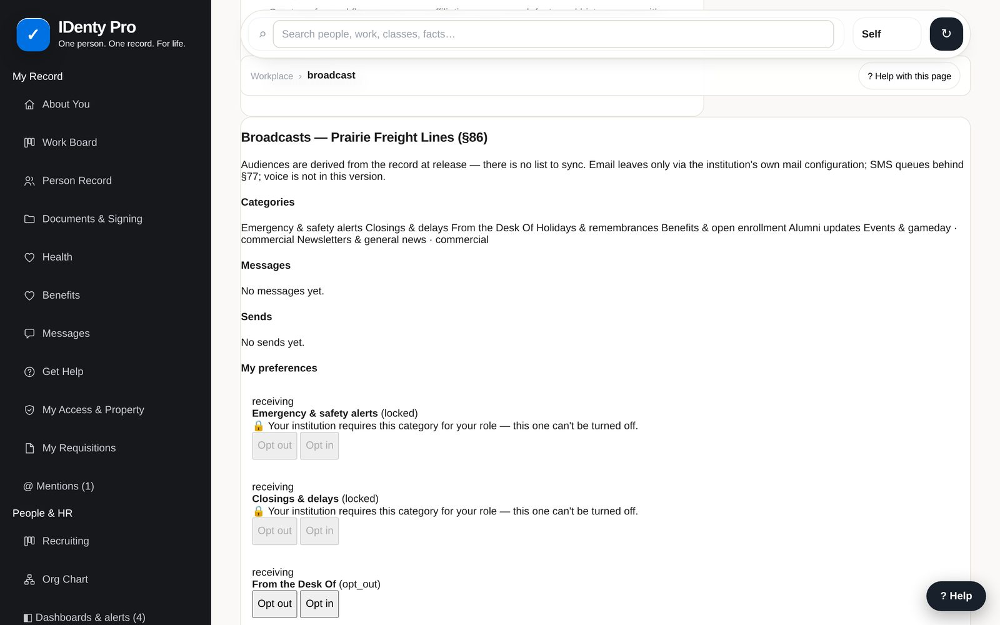
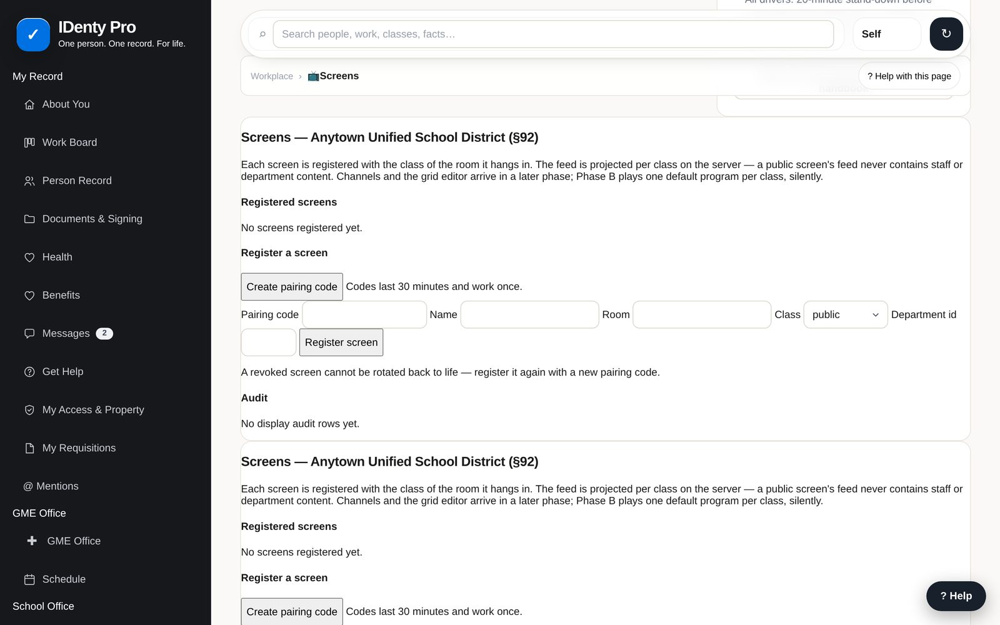
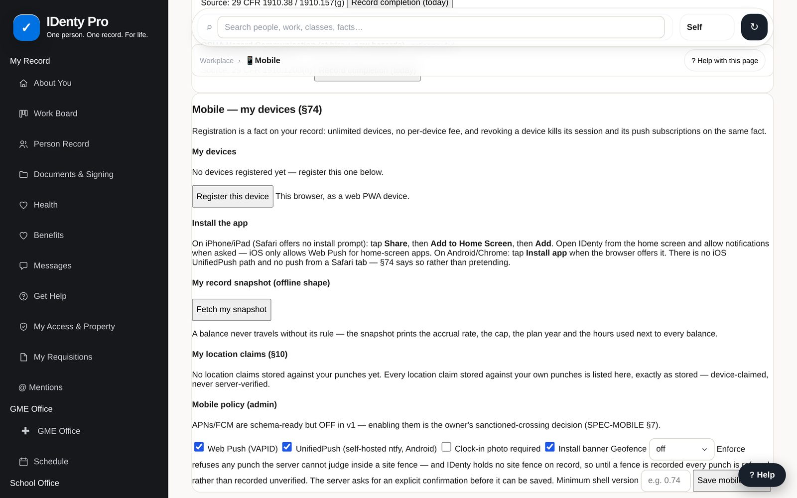
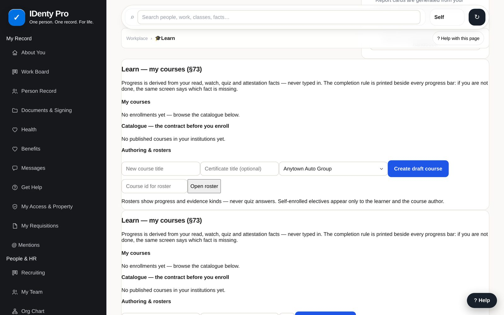
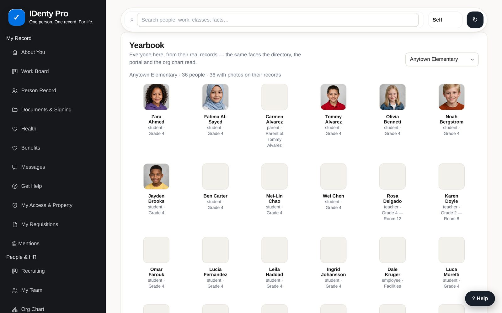
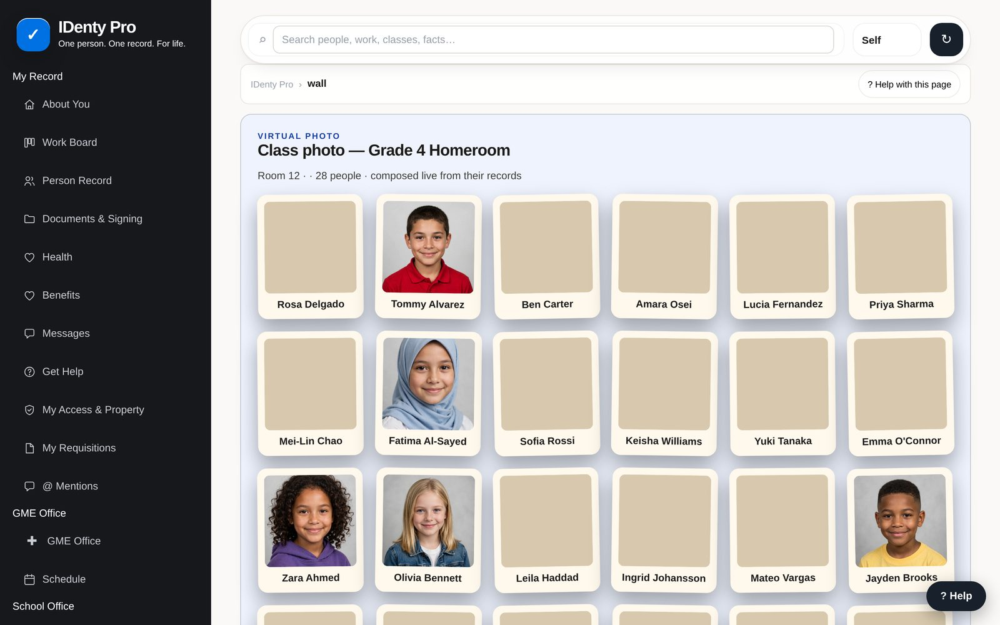

IDenty Pro is a free and open-source database built on a single idea: one
canonical record for one person, kept for life. The record follows a human
from kindergarten through school and college — through medical or
dental school and graduate medical training, through trade school, into employment, and on through retirement — instead of being re-created, badly, at every door.
That is the problem it exists to kill: every institution a person meets
currently re-keys the same facts into its own system, and every re-keying is
a chance for the copies to disagree. With IDenty Pro, institutions share the
person’s one verified profile. A fact is entered once, and the schools,
programs, and employers who are entitled to it read it from the record
itself.
The record is role-adaptive. A parent, a teacher, a student, an employer,
and an institution each see only the modules meant for them — the same
record, a different face, and nobody sees a module that isn’t theirs
to see.
IDenty Pro is the enterprise exception in the Vizsla family: the one
product designed from the start to run on a central server for an
organization, because a record shared by institutions cannot live on one
person’s laptop. Its honest state: in development.
There is no download and no finished product — but it is far enough
along to show, not just describe. Every screenshot on this page is a real
capture of the current build, running on fictional demo people.
The start screen. One system, one sign-in: the
chasing, the approvals, the team, the messages, and the payroll are tiles
on the same record — not five products with five logins.
First, the weather in HR
Scroll slowly. Everything below moves at your pace — stop
scrolling and it holds still, so you can actually read what a week of
disconnected systems does to real people. Every scene below is an ordinary
Tuesday somewhere: the names are changed, the systems are exactly as
found.
Scene 1 · The login that isn’t0%
Scene 1 · The login that isn’t
Three hours on hold with IT
IT DESK
Support ticket #4471
“Your employee ID doesn’t exist in this system.” — “I was hired Monday.” — “Then it can’t be wrong yet.”
BADGE
Two systems, two numbers
Payroll knows him as #00417. The database he needs knows #00471 — one typo, made once, on his first day.
ACCESS
The database he was hired to use
Locked until the numbers agree. The numbers live in different buildings, owned by different vendors.
Scene 2 · The name that failed
His I-9 came back rejected
NOTICE
FORM I-9 — REJECTED
Name on the form does not match name on the record. Case closed until a human untangles it.
RECORD
One man, two names
His passport says Alexander. Everyone — including his offer letter — calls him Alex. Both are him. Neither system will say so.
HR
The fix, as prescribed
“Re-file everything under one name, and hope the other system doesn’t notice.”
Scene 3 · The missing paycheck
The approval died with him
PAY STUB
This period: $0.00
Time worked: 80 hours. Time approved: none — the approver resigned two weeks ago.
QUEUE
Time card #2291
Status: pending. It will say pending forever — the only person who could move it no longer works here.
HOME
What $0.00 means downstream
The child support comes out of the check. There is no check. Now that’s late too — and it has his name on it, not the system’s.
Scene 4 · Two years, no raise
Reviewed by nobody
REVIEW
Performance review, 2025
Reviewer: —. Rating: —. Increase: —.
REVIEW
Performance review, 2026
Reviewer: —. Rating: —. Increase: —.
PAY
Two years at the same number
His time cards were approved every period — by the front desk. Approving time is not supervising a person.
Scene 5 · The three faces
The offer letter nobody can find
LOGIN
Three accounts, one man
Same username, same password, three accounts — one from each tour of duty. All his. None of them complete.
OFFER
OFFER LETTER — NOT FOUND
It was issued to one of him. Signing is stalled until someone figures out which one.
HR
Tech support, final answer
“Have you tried logging in as the other yous?”
Scene 6 · The triple hire
One opening. Three new hires.
REQUISITION
The job, as the systems see it
Terminated in HR. Still open in recruiting. Budgeted in a spreadsheet nobody else can see.
PIPELINE
THREE CANDIDATES, ONE CHAIR
The manager asked whichever recruiter answered the phone first — three times. Each said yes. No screen showed the others.
COST
The correction
Two offers rescinded. Two candidates burned. One manager who will never trust the process again.
Scene 7 · One word: cleared
Removed from orientation
FIELD
Onboarding status: CLEARED ☒
One field for drug screen, MVR and background check — all three, or any one, depending on who typed it.
ORIENTATION
Day one, 9:04 a.m.
“We’re so sorry — there’s a question about your screening, so you’ll have to step out until it’s sorted.”
RECORD
NEVER ACTUALLY CLEARED
The box was checked. The checks were not. The HR director found out live, in front of the class.
Scene 8 · The 2 p.m. letter
The letter that holds a home
DEADLINE
Letter needed by 2:00 p.m.
Proof of employment for the lender. No letter, no house offer.
PHONE
Three calls
Payroll doesn’t answer. HR says it isn’t theirs. The outside service that does this has an app — the app is down.
LETTER
The letter itself
Four lines long. Every fact in it already exists — scattered across three systems that don’t speak, owned by people who don’t answer.
One record
The same week, in order
One person, one login: legal name and preferred name live on the same record — and a rehire is matched to it, not multiplied into three accounts.
Approvals can’t die: every approval names its decider in the open, and when a supervisor leaves, the Chase Board hunts whatever stalls. No paycheck waits on a ghost.
A supervisor of record: everyone’s record says who reviews them. A vacancy is a visible gap to fill, not a two-year silence.
One job, one pipeline: the approved requisition is the spine of the hire — terminations, budgets and recruiting read the same record, so a filled job can’t be hired twice more.
Cleared, defined: drug screen, MVR and background are three statuses with three names. Nobody walks into orientation on a guess.
Proof in minutes: the employment letter is generated from the record itself — written before 2 p.m., not begged for down a phone tree.
The honest status: IDenty Pro is in active development. The machinery above is running in the current build, on fictional demo people — there is no finished product and no real payroll yet. When there is, it will be right here.
IDenty Pro exists because the systems it would replace — Workday
and UKG are the names at the top of the market — fail in ways that
are structural, not accidental. If you have ever administered one, you
already know this list. Here it is in plain words.
The price is a second payroll
The big platforms are priced per employee, per month, per
module: HR in one line item, timekeeping in another, recruiting in a
third, learning in a fourth. Before any of that, the implementation —
a project with a partner firm and a timeline measured in quarters, billed
like construction. After it, the annual increase, because the contract
says so. A mid-size company can end up paying more for the software that
tracks its people than it pays some of the people.
“One platform” is several products in a trench coat
UKG is what happened when Kronos and Ultimate Software merged —
two companies’ systems, still being stitched together years later.
Workday grew the same way, by acquisition. Payroll lives in one product,
time in another, recruiting in a third, and your people’s data is
copied between them on a schedule. The copies disagree. Everyone who has
run one of these systems has a story about which copy was wrong.
“Integrated” means somebody bills you for the plumbing
Every connection — to an insurance carrier, a bank, a badge
system, a background-check firm — is an integration: scoped, built,
tested, and maintained, usually by a consultant. Change a field on one
side and the interface breaks on the other. The vendors call this an
ecosystem. It is a toll road.
Simple things need custom development
A new approval chain. A report your auditor actually asked for. A
hiring form that matches how your company really hires. In theory:
configuration. In practice: a statement of work. The honest answer to
“can it do that?” is “our partners can build it”
— at day rates, on their calendar, in a way the next upgrade may or
may not respect.
The same person is typed in five times
Applicant tracking, HR, payroll, time, learning, badges — each
system wants the human re-keyed, and each copy rots at its own speed. A
name spelled three ways. A termination that reaches payroll but never
reaches the door badges. That is not a data-entry problem; it is what
happens when a person’s record has five homes instead of one.
The people doing the work get the worst screens
The executive gets a dashboard. The driver, the nurse, the
teacher’s aide — the people who clock in, swap shifts, and
wonder why a check changed — get the clunkiest corner of the
product and a phone queue. Their requests go in and are never seen again:
no status, no name attached, just pending.
You rent your own people’s history
The record of who worked, what they earned, and what they were
certified to do sits in the vendor’s cloud, metered by the seat.
Getting it out — really out, all of it, in a shape you can use
— is its own project, quoted separately. Leaving is priced to make
you stay.
And the company intranet is a swamp
The same disease lives one floor down, in SharePoint — the
intranet most companies are issued whether they asked or not. Anyone
can create a site; nobody ever deletes one, so the handbook could be
in any of fifty sites, in three versions, two of them wrong.
Permissions come in dozens of flavors, managed from three different
control panels, with inheritance that breaks and stays broken — so
the new hire can’t open what the team can, while a contractor
keeps access nobody remembers granting. Search takes the blame, but
the engine is fine: the content is rotten — no owner, no review
date, no expiry — so people stop trusting it and go back to emailing
documents around. News never expires on its own. And you can’t
buy just the intranet: it arrives inside the whole Microsoft 365
bundle, per person, per month, forever, with a consulting project on
top to stand it up. IDenty Pro’s answer is below: the intranet
is not a second product. It is the same building.
What IDenty Pro does instead
One record, typed once
A person is entered once and verified once, and every institution that
person meets reads the same record. In the demo data below, one
driver’s single timeline carries two employers, his CDL, his DOT
medical card, and his pay — school, training, and work in one place,
because in a life they were never separate.
One record across employers. Two companies,
one timeline. Nothing was re-keyed when he changed jobs — the
record is the person’s, and institutions attach to it.
Everything is the same system, so nothing needs integrating
Payroll, time, scheduling, leave, recruiting, compliance, support
tickets, forms, badges, and the truck keys all read and write the one
record. There is no interface to break because there is no second system.
The payroll below is not a module bought from somebody else: the
gross-to-net engine — federal brackets, FICA, W-4, garnishments
— is part of the record, and it says so on its own page.
Payroll, owned outright. The calculation
lives in the same system as the hours and the record — and any
worker can open “why is my check different?” on their own
record and read the arithmetic in plain words, garnishments included.
No ticket. No phone call to HR.
And the office lives here too
The subscription pile doesn’t stop at the HR platform. A company
today also rents the office suite for documents and spreadsheets, the
chat app, the video app, the task board, the helpdesk — five more
subscriptions, five more logins, and not one of them knows the employee
record exists. IDenty Pro’s answer is the same as everywhere else
in this design: built in, on the same record. Instant messaging and
video calls are part of the system — calls run peer-to-peer, and a
group call waits in a join bar instead of ringing six people at once.
The Work Board carries the team’s tasks, grown out of the
record’s own gaps. Documents are written on the record, signed
natively, and sealed as evidence. And a full office suite — word
processing, spreadsheets, forms bound to record facts, print-faithful
PDFs — is being built into the same core: its engine already
exists and passes its tests, and the editing faces are the piece still
under construction. This page won’t pretend otherwise — but
the direction is fixed. It is all one system, or it is a pile.
Messaging, in the building. The chat is not
a separate subscription that has never heard of your employees —
it is the same people, the same record, the same sign-in. Video calls
live here too.

Announcements that reach exactly the right people.
The audience is pulled from the record when you send, so there is no
list to keep in sync.

Hallway screens that know what they’re allowed to show.
Every screen is registered to a room class, and a public screen never
carries staff content.
Requests cannot vanish
Every request carries a status and the name of the human
deciding it. Nothing sits in an anonymous “pending.” A
manager’s request to hire is a structured form — title from a
catalog, headcount, start date, work location, orientation location,
supervisor, pay band — and it walks four approvals in order:
supervisor, leadership, HR, finance. Each signer certifies in words the
system keeps verbatim, and nobody can approve their own request. When the
last signature lands, the approved request posts the job itself.
No re-typing it into a second system, because there isn’t one.
The requisitions board. Every position
request in the house — here filtered to what is waiting — each saying
exactly how many of its four approvals are in and whose desk it is
sitting on.An approved request, in full. The form, the
money, the reason — and all four signatures, each with the
certification sentence the signer actually agreed to. The button at the
bottom goes to the job this request became.
The system does the chasing
Expiring licenses, missing forms, aging tickets, PPE past its
replace-by date: one board, computed from the live record and stamped
with the time it was computed. In the big platforms this work lives in
somebody’s inbox and memory, and it is the first thing that slips
when that person goes on vacation.
The Chase Board. “This list is what HR
used to hold in their heads and their inboxes.” Now the system
holds it.
Access and property come from the same record
Hired, and the accounts, the badge, the laptop, the uniform, and the
truck appear — driven by the job on the record, not by a ticket to
IT. The badge is generated by the system itself. A vehicle cannot be
handed to a driver whose CDL or medical card has lapsed; the record
refuses. Gone, and sign-ins stop the same day, shared work gets a
handover window, and an exit certificate states exactly what came back.
In the big-platform world this is three more products and a spreadsheet.
Here it is the same record, doing what a record is for.
The property desk. Accounts, devices,
vehicles, uniforms, and PPE in one registry, worked from one
queue.The worker’s own view. Everything
the job gives him, and what happens to it if he leaves — written
down where he can read it before it matters.The badge, generated in-house. Issued
from the record, carrying the record’s status. When the record
says gone, the badge says so too.

Your phone is just another door to the same record.
Register it, revoke it, and the session dies with the fact.
Built for the institutions the giants underserve
A residency program gets its graduate-medical-education machinery
— milestones, procedure counts, duty hours, accreditation windows
— in the same record the hospital hires from. A school district
gets classes and state reports. Nobody buys a second platform for the
training years, and nobody re-keys a resident into a separate trainee
system for three years and back out again.
The GME Office. Residency machinery that
the big HR platforms simply do not have — because in their world,
training is somebody else’s product.
Help lives in the building
The support desk and the how-to library are part of the same system,
reading the same record. A worker’s ticket about a forklift and the
article that answers the next worker’s question live one search
apart, and the people who fix things can see the record of the person
asking. No separate helpdesk contract, no knowledge base in a fourth
cloud.
The support desk. Tickets carry response
targets stamped when they are filed — and an agent can never be
assigned their own ticket.The how-to library. Anyone can suggest a
correction; an editor approves it, and the credit lands on the
suggester’s own record.

Learning that keeps its own receipts.
Progress comes from what you read, watched, passed and signed —
never from a typed-in percentage.
The dealership runs on the same record
A car store usually keeps three more systems that have never met
the employee file: one to desk deals, one for the service lane, one
for parts. Here they are one more face of the record. A customer is
a person on the record — the driver who works for the freight company
buys his car here, and it is the same human in both places: one file
for the deal, the financing desk, the repair orders, and the parts
shelf. When the deal delivers, the purchase lands on his record as a
fact, next to the license that lets him drive it home.
The shop’s morning screen.
Appointments, repair orders, and the parts shelf — the
dealership’s whole day, on the same record as its
people.
Construction jobs bill themselves
For a builder, the record grows a ledger. Crew time is coded to
the job, the phase, and the kind of cost as it is clocked; when
payroll finalizes, the wages and their burden — taxes, workers’
comp, fringe — land on the job by themselves, at the rates in force
that week. Progress billing stops being a spreadsheet somebody
keeps: the schedule of values, the pay applications with the
standard G702/G703 math done by the server, retainage held and
released in both directions, change orders that cannot be billed
until they are approved. Certified payroll — the WH-347 — comes out
of the same hours, because it was never a separate pile of paper
either.
The job ledger. Contract, cost to
date, billed, and retainage for every job — figured from coded
crew time and the schedule of values, never typed in.
Customers are people, not a second database
A home-services company’s customers are people too, so they
live on the record — in this demo, the very same record as the driver
above: an employee at one institution, a customer at another, one
file. An estimate is priced from the shop’s own pricebook and
approved with a signature that lands on the customer’s record.
The work order carries the lines actually used; the invoice is
generated from those lines, never re-typed; payments are recorded
against it; and what is owed ages on a board the system chases like
everything else. The gate code the tech needs is on the
customer’s site notes — marked staff-only, and kept out of the
customer’s own view.
The customer board. Who owes what,
at a glance — chased by the same board that chases expiring
licenses.One customer, one page. What he
owes, where the crew goes, and what they service — the gate code
visible to staff, and only to staff.
The intranet is the same building
And the SharePoint job — the home page, the news, the cafeteria
menu — is a publishing layer on the same record, not a farm of
sites. Pages are built from templates and a small, opinionated set
of blocks, so a non-designer can’t produce an ugly one. News
is written once, aimed in plain words — everyone at the terminal,
drivers, teachers — scheduled when it should be, and expired by
default instead of living forever. Menus are structured data — the
week, the day, the meal — never a photograph of a PDF. A page that
points at a policy points at the current sealed version from the
record, and the audience for everything is resolved from the same
affiliations that decide everything else: if you can find it in
search, you can open it, and if you can’t open it, it never
appears. One home per institution. Sprawl is refused by design.
The intranet home. One published home
per institution: news with an author, a publish date, a review-by
date, and an expiry — no site farm, no zombie pages.

The yearbook builds itself. Everyone
on the record, with the photo from their record.

The class photo wall. The whole
homeroom, straight from the class roster.
It costs what a server costs
IDenty Pro is free and open-source. It runs on one ordinary machine,
on the institution’s own hardware, and the data never leaves the
building unless the institution sends it. There is no per-seat rent, no
module menu, and no exit project — the record was always yours.
The honest limits, stated as plainly as the rest: it is in active
development, it is not a finished product, and nobody should run a real
payroll on it yet. What it already is, is proof that the shape works:
one record, one system, no toll roads.
One tool, on purpose
People will say “jack of all trades, master of none.” But most of these trades are commodities now: word processing runs on open file formats, an electronic signature’s legal force comes from statute (ESIGN/UETA) rather than a vendor’s brand, and a database grid is a database grid. Selling each commodity back as a separate module — own login, own copy of your people, plus an integration bill to connect it to the record — isn’t craftsmanship; it’s toll collection. The masters’ real failure is the seam: five products holding five copies of the same person. IDenty Pro’s claim is mastery of the seam, because there isn’t one — one record, and every trade reads the same truth. Specialization still wins a few deep wells (multi-country payroll tax, giant learning catalogs, pooled benchmarking), and our comparison chart marks those rows Missing for IDenty, in the open.
Don’t take our word for any of this. We compared IDenty Pro against the 432 functions of 59 platforms — the HR giants (SAP SuccessFactors, Oracle, UKG, Dayforce, ADP, Rippling, HiBob, Paycom, Paylocity, BambooHR), the residency tools (New Innovations, Medtrics, MedHub, Thalamus, One45), the college systems (Ellucian, Slate, Workday Student, Blackbaud), the trade-school systems, the K-12 student systems (PowerSchool, Infinite Campus, Skyward, and friends), and the classroom systems (Canvas, Schoology, Google Classroom, Moodle) that schools rent on top of all of them — and published the losses alongside the wins.
Capacity, in plain numbers
IDenty Pro runs on one server you own — no rented cloud, no per-seat meter. So here are the numbers, measured on a workstation-class server (14-core Xeon, 32 GB of memory) doing real work — chase boards, record lookups, full-text search: about 60 requests a second, sustained, and zero errors with 250 people connected at the same time.
In human terms: people click, then read, then think. A few hundred people actively working at the same moment — the busiest onboarding morning a 10,000-person institution can throw at it — sits comfortably on that one box. Logged in is not the same as active, and idle people cost almost nothing.
And the honest limit: if you outgrow one server, the answer today is a bigger server. Running several app servers in front of one database — the trick the giant platforms use — is on the roadmap, not in the product, and we won’t claim it until it’s built and measured. When the numbers on this page change, it’s because we measured again.
Meet the demo cast
Every screenshot on this page is a real record in the working
build, and every record belongs to a person. These are the demo
people — invented, generated on a home graphics card — and they no
longer just pose for this page: their portraits live on their own
records inside the product, so the faces on the start screen and
the person records above are the same people listed here. They are
employed across the school district, the hospital, the freight
company, and the auto group in the demonstration data. A record system should
look like the workforce it serves: not just the corner office, but
the custodian, the bus driver, and the night warehouse crew too.
Brenda Sikes. School bus driver, Anytown Unified.Dale Kruger. Custodian, Anytown Elementary.Mike Kowalski. Warehouse worker, Prairie Freight Lines.Tony Russo. Delivery driver, Prairie Freight Lines.Crystal Boudreaux. Sales advisor, Anytown Auto Group.Darnell Whitaker. Security guard, Midstate Health.Hank Pruitt. Dump truck driver, Mud Creek Hauling.Ricky Salas. Mechanic, Anytown Auto Group.Karen Doyle. Teacher, Grade 2, Anytown Elementary.
Vizsla Post — the newsletter tool, ours
The second member of this shelf is Vizsla
Post, and this time the page gets to say the better thing:
it is Vizsla’s own software, built here — a clean-room
reimplementation in Rust, written from the feature blueprint of
Mailcheap, Marc Lou’s open-source newsletter app
(AGPL-3.0; no upstream code ships in it, and the credit is his). You
write an issue, send it to your list, and the issue also publishes as a
web page — the beehiiv-and-Substack job, without handing your
list to either of them.
It runs on our own server and sends through a provider the owner
chooses — our own Microsoft 365 mailbox, Amazon SES, PostShiba,
or an organization’s own mail server — so the list, the
sending, and the archive stay the organization’s own. Its honest
state: seated on our server now, and its first list is
opening — the form below is live, no issue has been sent
yet, and sending stays switched off until the mail plumbing behind it
is properly configured. Published issues collect in the
public
archive. The whole story is on the
Vizsla Post page.
The Vizsla OS list
News, when there’s news.
Join the list this page is about. We’ll send
a confirmation email — click its link and you’re on.
That double opt-in is deliberate: nobody lands on this list by
accident, and nobody is added by anybody else.
No spam, ever. News only when there’s news.
Unsubscribe in one click, anytime — in every email, effective immediately, no hard feelings.
Your address is never sold or shared. Read the privacy policy — it’s short, and it means what it says.
What this shelf runs on
Even the project’s own mailbox pays rent. Vizsla’s business
mail runs on Microsoft 365 Business Standard with Copilot —
$28.20 a month — and it is a subscription for a plain
reason: a home user isn’t allowed to run a mail server of their own.
Internet and email providers block the sending and receiving, and most of
what a home server did send would never land. To be sure the mail arrives,
you pay the tax — and Microsoft got the job simply for the Copilot
bundle.
The tools this shelf would grow into carry tolls of the same kind.
E-signature an app can call: DocuSign’s developer tier from $50 a
month billed annually, Dropbox Sign’s API from $75 a month.
Accounting sync: Xero’s partner fee, about $24 a month. Hiring
screening is the honest exception — background checks run by law
under each employer’s own credentialed account, so the fundable
piece there is only the connector, and it carries no price. The full
breakdown — every fee this project has priced, in the open —
is on the Donate page.
The honest state of this shelf
Young, and not pretending otherwise. IDenty Pro is being built —
the screenshots above are the current build, honestly labelled, not a
mockup of a someday product; the
newsletter tool, Vizsla Post, is built and seated on our own server,
with its first list opening above. When either is ready for outside
hands, this page will say so in as many words, with the download or the
deployment beside it. Until then, organizations curious about either are
welcome to write: admin@vizslaos.com.